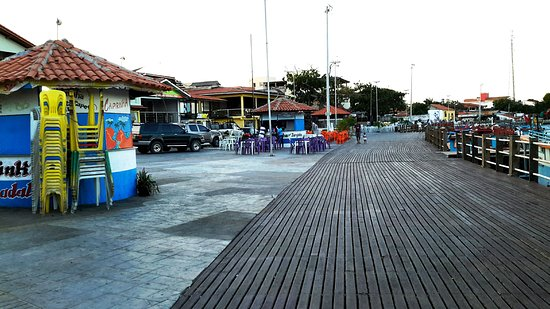
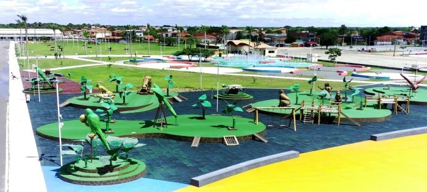
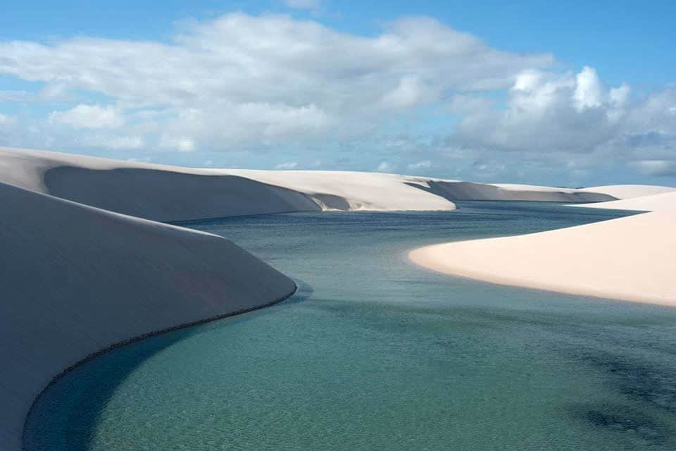

BARREIRINHAS
Barreirinhas é um município brasileiro do estado do Maranhão. O município é conhecido como "Portal dos Lençóis maranhenses" pelo fato de ser a principal base de acesso ao Parque nacional dos Lençóis Maranhenses, uma região turística que consiste numa vasta área de altas dunas de areias brancas e de lagos e lagoas.